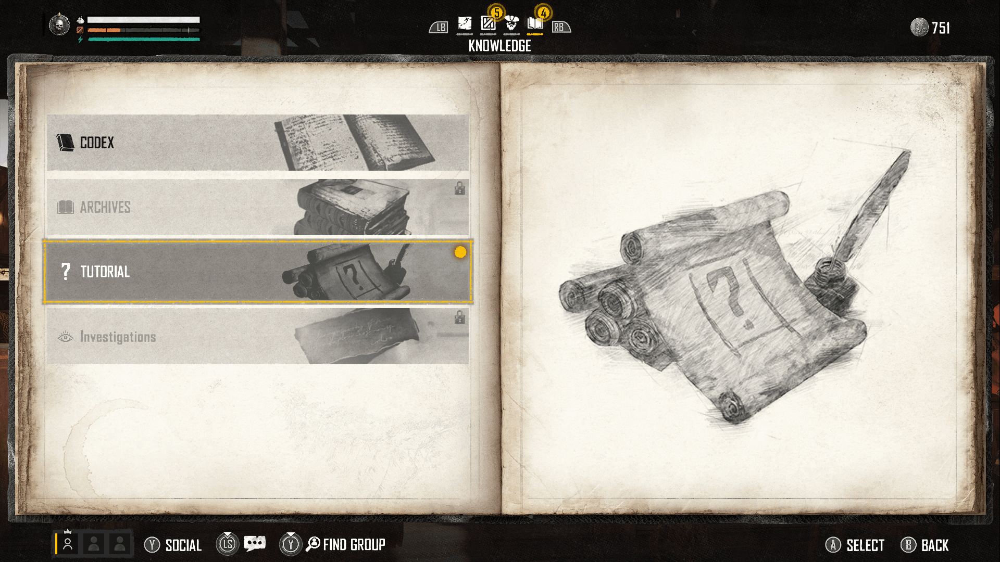
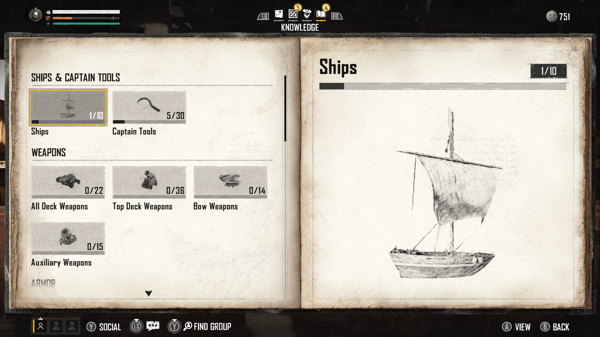
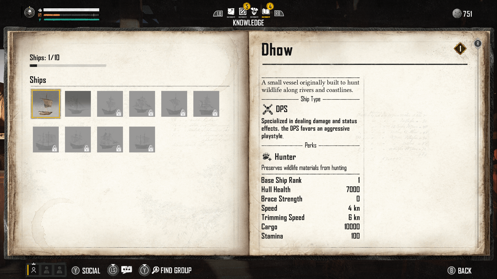
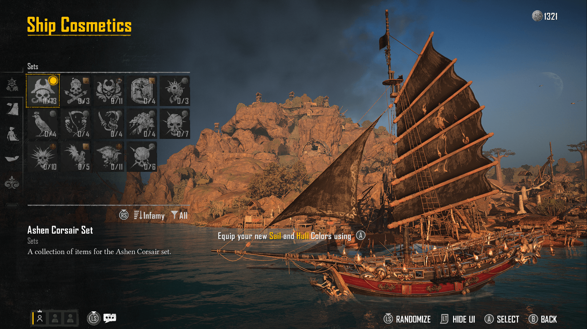
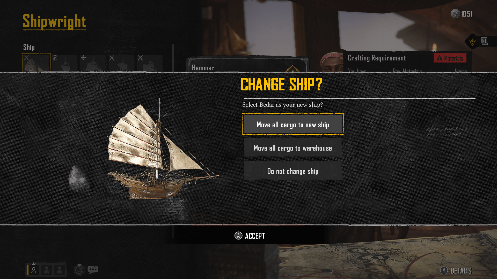
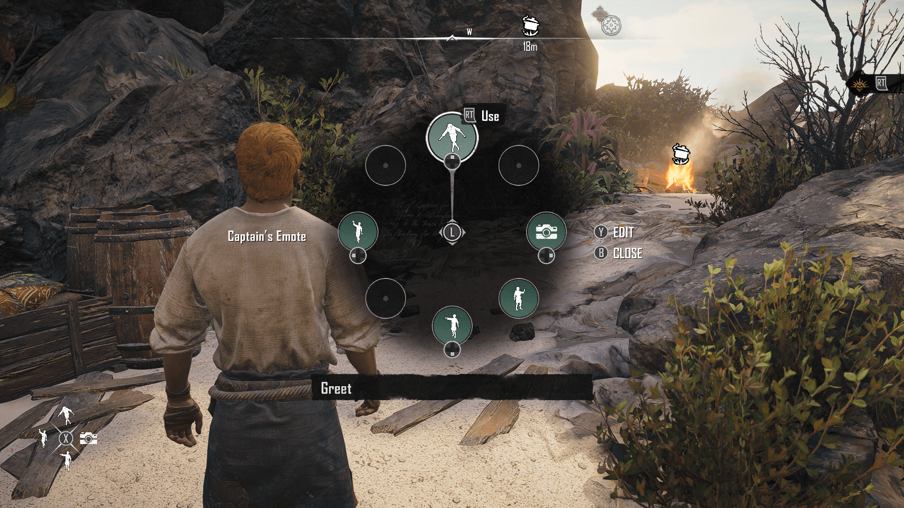
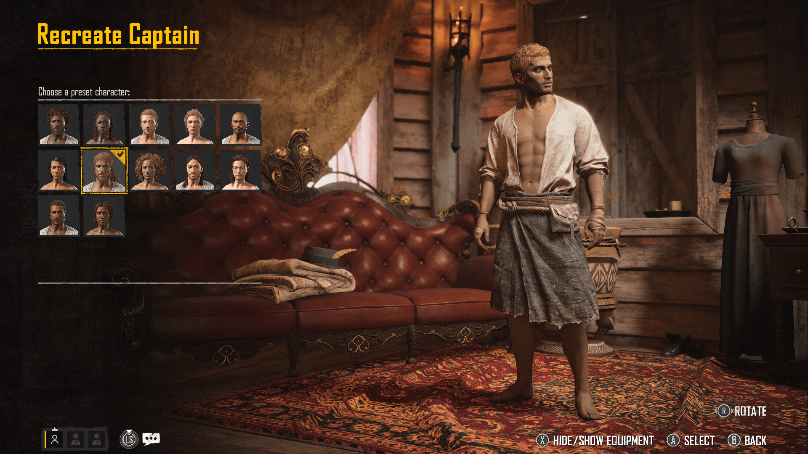
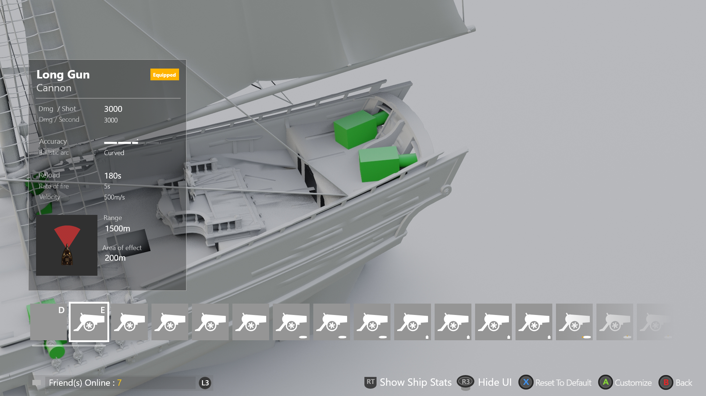
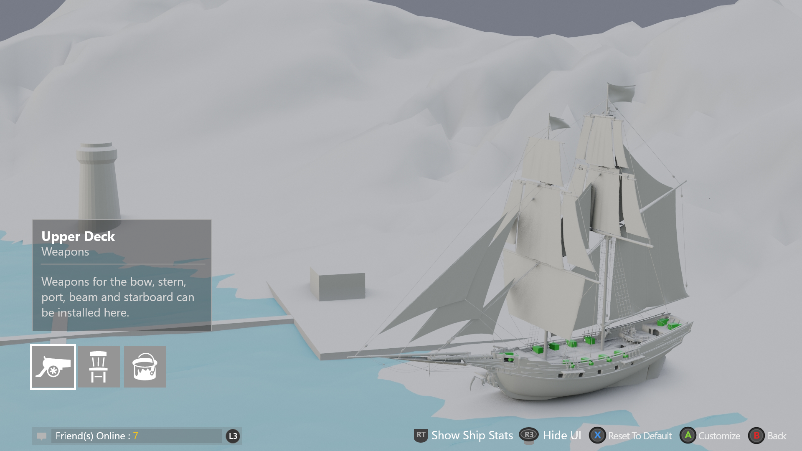
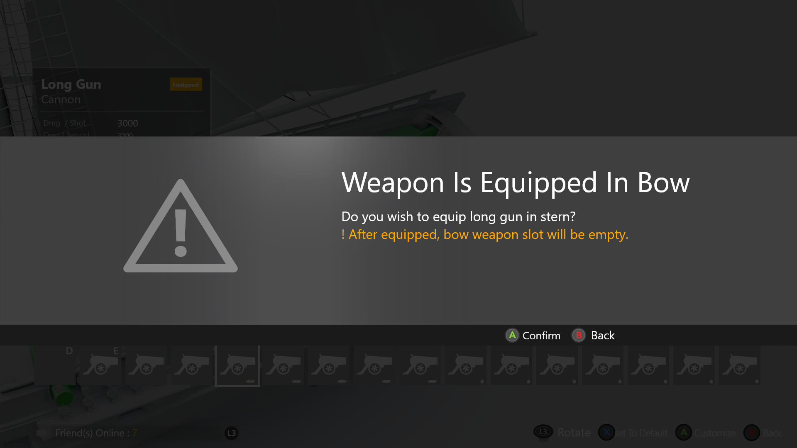

玩家根本看不懂的系统
《碧海黑帆》的武器系统高度受限：船只插槽数量固定，武器尺寸各异，不同组合会完全改变玩法风格。玩家根本搞不清楚什么能装备——更不知道为什么某些选项不可用。
信息是有的，清晰度没有。而游戏设计师——理所应当地——需要展示所有数据：属性、类型、特效、兼容性。这种张力定义了设计挑战。
「数据都在那里。玩家被一堆与他们当下决策无关的信息淹没了。」


玩家与船只之间的每一个界面
我设计了全套定制化界面：Codex知识库系统、管理船只主界面、武器与护甲装备流程、船只外观、更换船只确认弹窗、动作轮盘，以及船长再创建界面。
这些不是孤立的页面，而是一个系统。玩家在选择武器时，需要理解船只类型兼容性、插槽限制和属性取舍。挑战在于：在不削减游戏设计师所需信息深度的前提下，让这一切清晰可读。





一个切换按钮。两种心智模型。
经历了至少五轮大迭代——以及与需要展示完整信息的游戏设计师之间真实的张力——突破口其实很简单：玩家不是被信息淹没了，而是被无关信息淹没了。
「仅显示兼容」与「显示全部」之间的切换按钮，化解了团队争论，同时兼顾了两种截然不同的用户心智模型。新手玩家看到简洁有效的选项，老玩家可以查看所有内容。Codex提供了信息深度，但将其置于决策时刻之外。
原型是对齐团队的共同语言
设计经历了至少五轮大迭代。早期版本密度极高——所有属性全部显示，所有选项一览无余，船只以3D形式渲染，武器插槽直接高亮在船体上。一轮又一轮的玩家测试都指向同一个结论：玩家陷入了选择瘫痪。



与游戏设计师之间的张力并非出于个人立场——他们对系统的理解比任何人都深。解决方法来自原型。一个关键争论是：自由光标 vs 手柄导航，两种方式下船只摄像机的响应方式截然不同。我为两种方案分别制作了可交互原型，让团队亲身感受差异，而不是停留在口头争论。
// 光标操作方案 — 鼠标在3D船只上自由移动。
// 手柄导航方案 — 船只旋转至当前聚焦插槽，摄像机跟随操作意图。
亲眼看到两种方案的差异，把对话从主观意见转变为客观证据。我们的目标是一致的：做一款玩家真正能看懂、真心喜爱的游戏。原型让这个共同目标变得可见。
清晰度得以规模化
在决策点消除无效选项——玩家在装备过程中不再遭遇死胡同
设计方案无需改动，即可支持后续所有直播服务内容更新
一个切换按钮同时解决了QA反馈和团队内部争议
Codex系统提供了完整信息深度，且不干扰决策时刻的清晰度